The Client: Collective Wonder Herb School, a community-centered educational platform founded in Portugal by clinical herbalist Olivia Fite.
What We Created: A Brand Video For Their Website and Course Videos.
Keeping the video clear and concise was important, as we all know everyone is so busy with life happenings, but we also wanted to capture the beautiful Collective Wonder Herb School nature filled world!
Collective Wonder's students mostly find them through word of mouth which is amazing and shows how special their community is, but with a video they could also easily speak to the people finding them through search or social media. We also explained the two main course options clearly so the sign up felt clear and exciting.
Collective Wonder Herb school's community is so special, so it was great to also be able to capture real testimonials from the students, rather than just having written words on the website and finally, we definitely wanted to show the amazing Portuguese nature and plants that are so dear to Collective Wonder.
If you want to get back to running your business while someone else takes care of the video side of things? Check out our video production services.
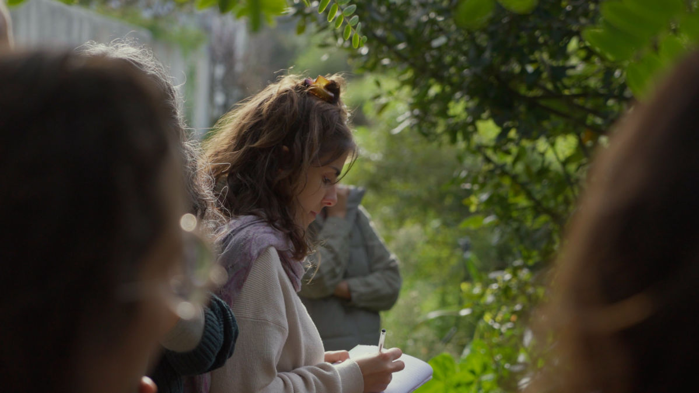
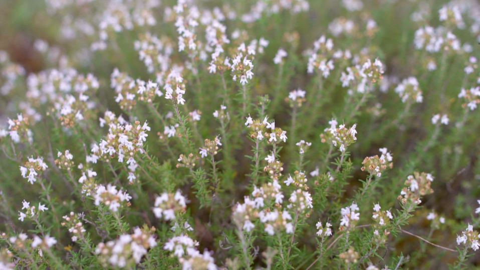
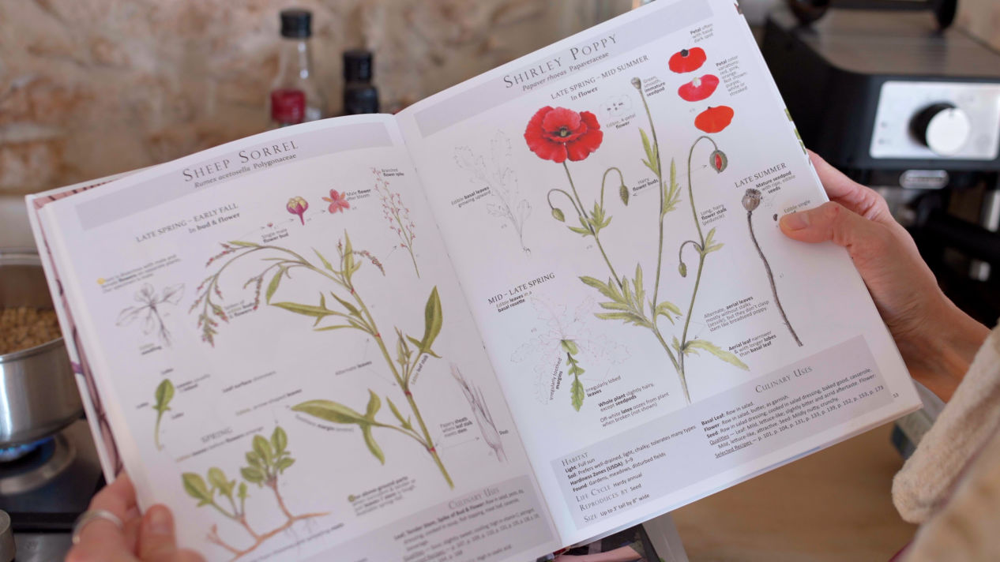
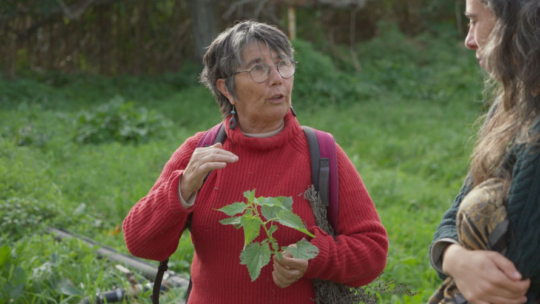
Before we began filming we looked closely at what Collective Wonder Herb School is all about and thought about why a potential student might hesitate before signing up. We sat down with Olivia and listened to her stories about moving to Portugal in 2018 and her nature walks during lockdown. We avoided stiff corporate scripts and went for our usual documentary-style chat.
We mapped out the story arc and made sure the two different course offerings the global online course and the workshops in Alvaiazere were clear. We filmed Olivia's interview in a beautiful cork oak forest near to her home, filmed all the amazing local plants and captured shots of her medicine making process.
We let the students tell their story, they spoke about how the classes had changed their daily family life from making fire ciders to gardening with their daughters and captured b-roll of the foraging walks.
Finally back home at the desk with a herbal tea of course, we cut everything together and handed over the finished video.
Here is some of the feedback...
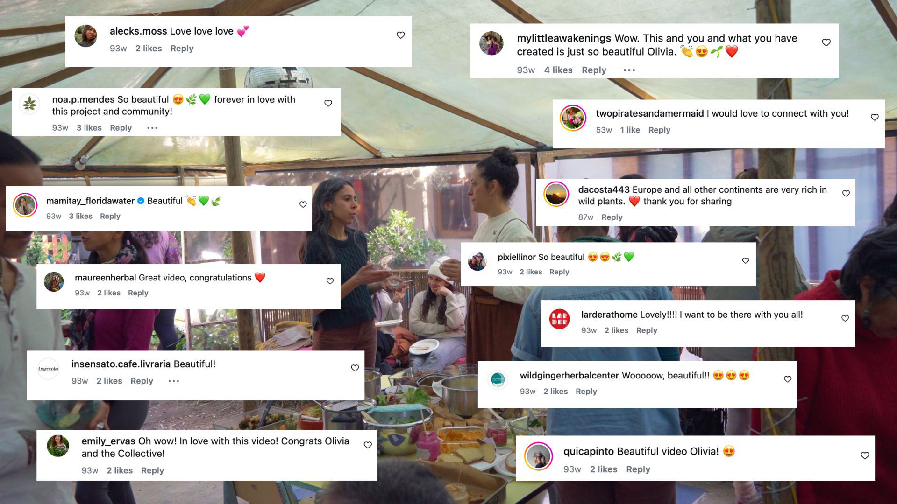
Some of the highlights of the Collective Wonder Herb School video were being around people who love plants as much as I do! Learning how to make things from plants that are really helpful and fun and just how much they give us.
The final film gave people who had never heard of Collective Wonder a quick feel for the school, the course and what makes it special. It also helped build trust around a big 11-month commitment by showing the people and experiences behind it. Released for the school’s 3-year anniversary, it captured where Collective Wonder Herb School was at that point, and the response from past students was really lovely, with people picking out familiar moments and memories from the course.
"Wow! We have a video. Thank you Katy & Eugene of @munjirivideos - working with you two was just about the easiest collaborative process I could have ever imagined. You were incredibly relaxed (especially for being new parents) and professional. This video was something I had been hoping would manifest since 2021, and here it magically happened at the perfect time. Many people who sign up for our classes (which can be a bit of a commitment!) usually come to us by word of mouth. It can be hard for a small business like mine to do all the marketing work needed to get the word out to people who may not know about Collective Wonder herb school. This video is also a nice documentation of where the school is now - at this moment, after 3 full years of existence. I look forward to continuing to work with @munjirivideos as the school continues to grow."
— Olivia Fite, Founder of Collective Wonder Herb School
If you would like to see more examples of our videos check out our portfolio.
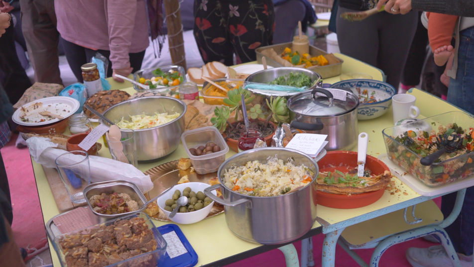
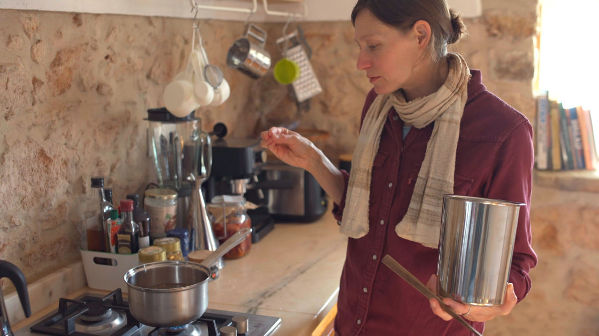
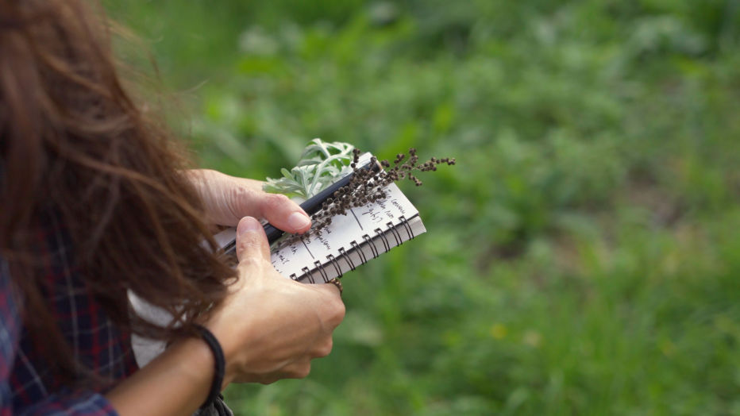
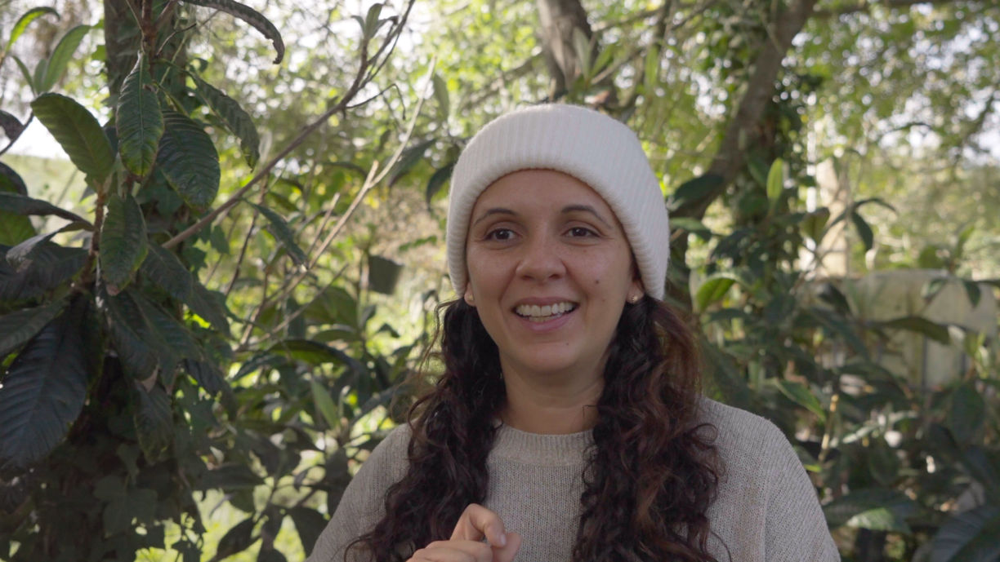
If you have a creative brand or social enterprise that you have shaped with care, but feel overwhelmed by the video side of things, we would love to help. We're Katy and Eugene and we take your marketing goals and turn them into honest down-to-earth videos that handle the hard work for you online. We take care of all the research, scripting, planning, and editing while keeping you completely relaxed on camera. Creating a beautiful visual world that your people can't wait to step into, while you stay present in your business.
katy@munjiri.com
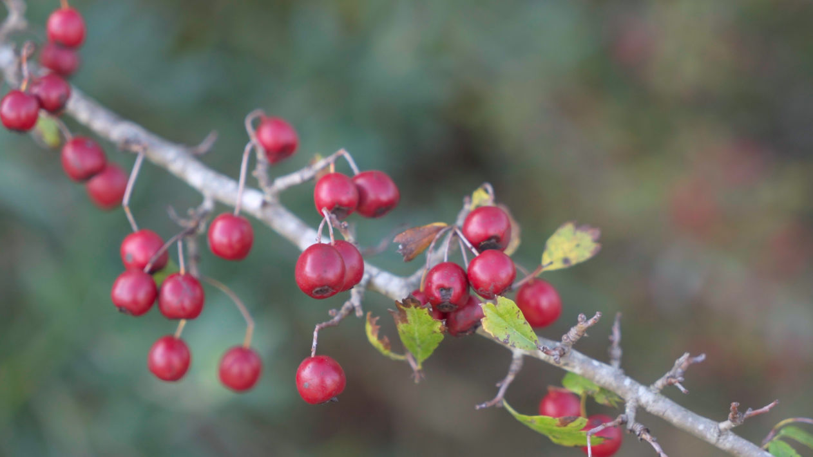
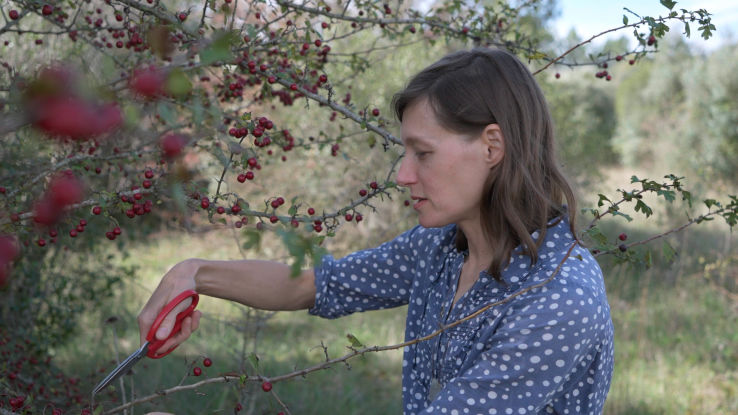
Blog post by Katy co-founder of Munjiri Videos (I'm one of the two videographer's helping businesses share what they do!)
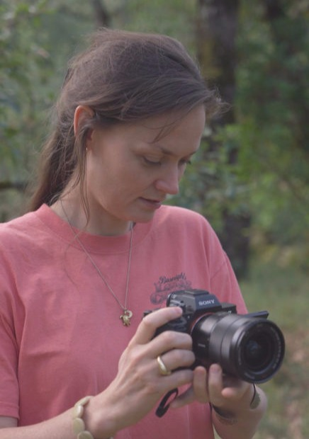